Nightfall
Short Movie · Zurich 2026
- Virtual Production
- 3D Environments
- 3D Animation
- Unreal Engine
Operated a real-time Unreal Engine environment during a virtual production shoot. Maintained synchronization between the physical camera and the virtual scene, adjusting lighting, animation, and scene parameters live. Set up and triggered animation cues in sync with the actor’s movement to align virtual events with on-set performance and timing.
- Role
- Virtual Production Operator
- Tools
- Unreal Engine, Blender
- Year
- 2026
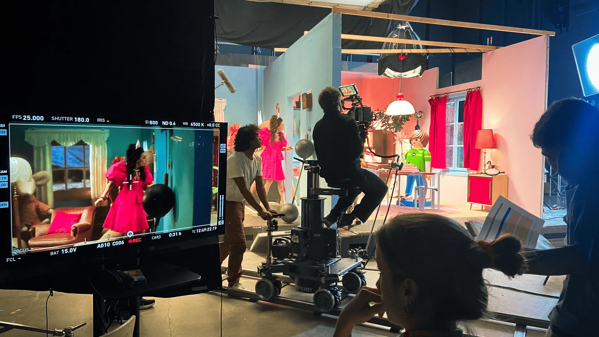
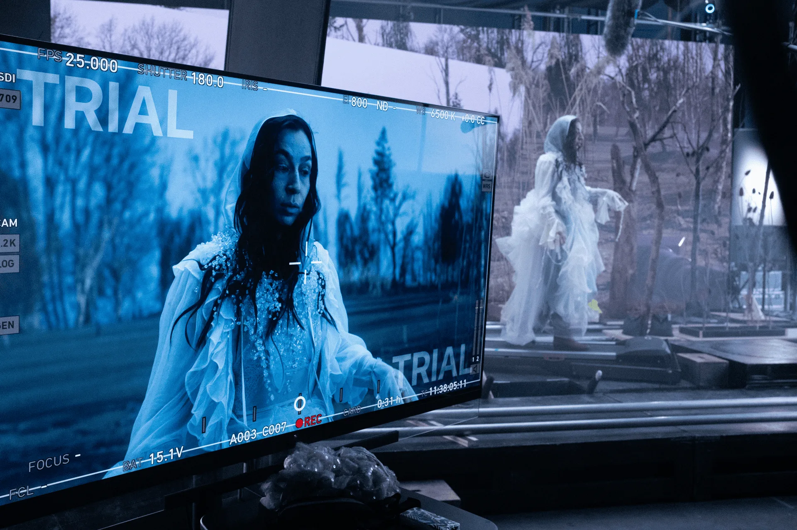
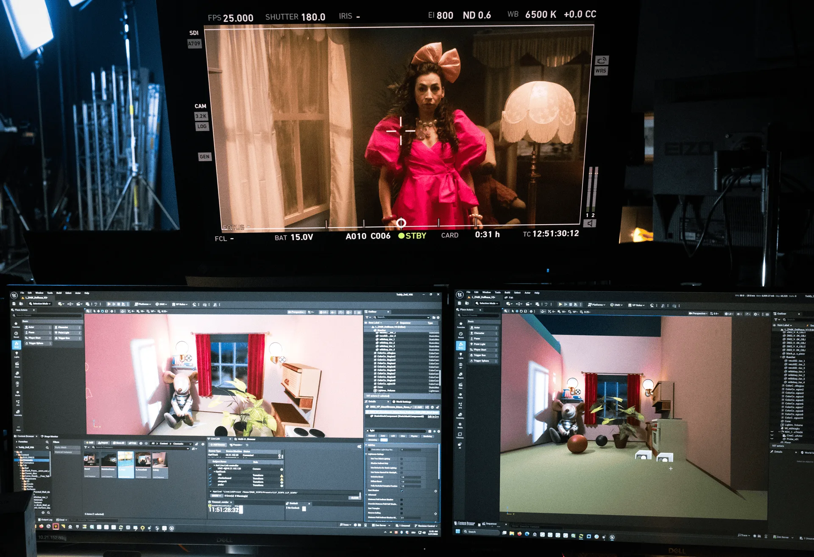
Rohschnitt
Short Movie · Zurich 2025
- Virtual Production
- VFX
- 3D Environments
- Unreal Engine
- Niagara
Built and operated a real-time environment in Unreal Engine for a virtual production shoot. Developed Niagara-based simulations for explosions and sand, and controlled them live on set. Set up animation triggers to align VFX events with the actor’s movement, adjusting timing and behavior during takes.
- Role
- Virtual Production Operator
- Tools
- Unreal Engine, Blender
- Year
- 2025
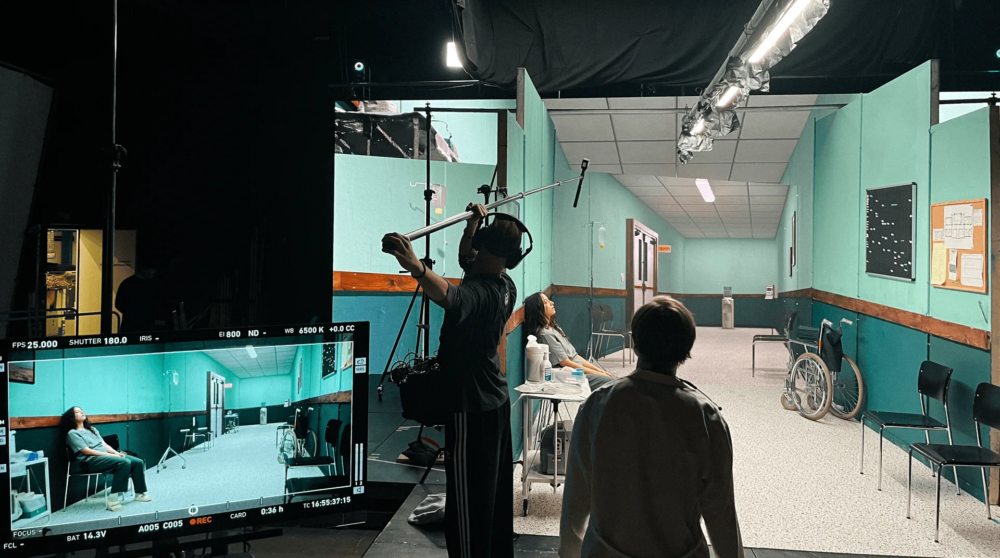
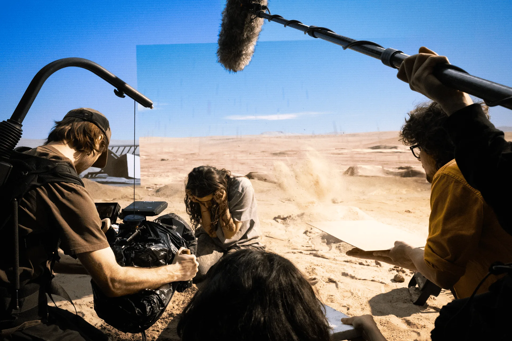
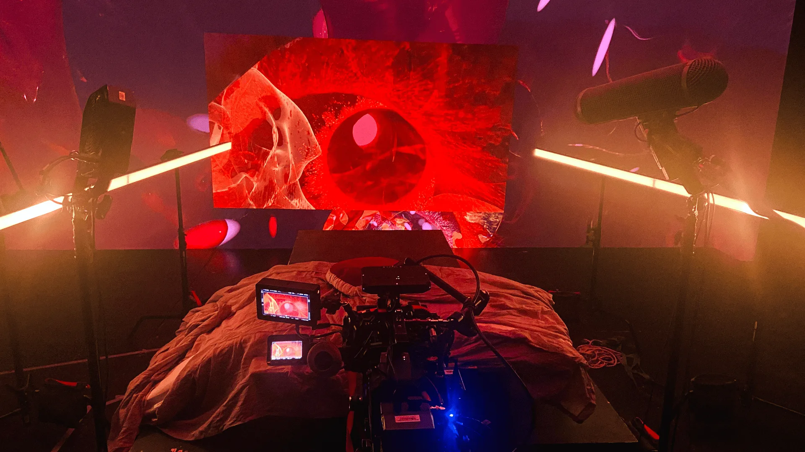
Do You
Music Video · Zurich, 2024
- Stage Visuals
- Lighting Integration
- TouchDesigner
Developed and ran a real-time visual system for a music video shoot, combining stage lighting with generative graphics. The visuals were adjusted live on set to match camera movement and performance timing.
- Role
- Visual Designer
- Tools
- TouchDesigner, After Effects, MadMapper
- Year
- 2024
Spinnen
Performance · Zurich 2025
- Audio-Reactive Visuals
- Signal Routing
- Art Direction
Developed a real-time visual system driven by live microphone inputs for the performance “Spinnen” by Luis Escobar. Built a TouchDesigner pipeline that translated audio signals into visual behavior, controlling intensity, movement, and transitions during the performance. Operated the system live, adjusting parameters in response to sound dynamics and performer timing.
- Role
- Visual Designer, Technical Operator
- Tools
- TouchDesigner
- Year
- 2025
Ego
Interactive Exhibition · Zurich 2025
- Live Post-Processing
- Signal Routing
- Camera Tracking
- TouchDesigner
Built an interactive video pipeline where live camera input was processed in TouchDesigner and projected at room scale. Participant movement was captured and used to drive visual transformations and lighting behavior, creating a feedback loop between the body, image, and space. Presented at Immersive Art Space (Zurich, 2025)
- Role
- Visual Designer, Technical Operator Assistant
- Tools
- TouchDesigner, MAX, MadMapper
- Year
- 2025
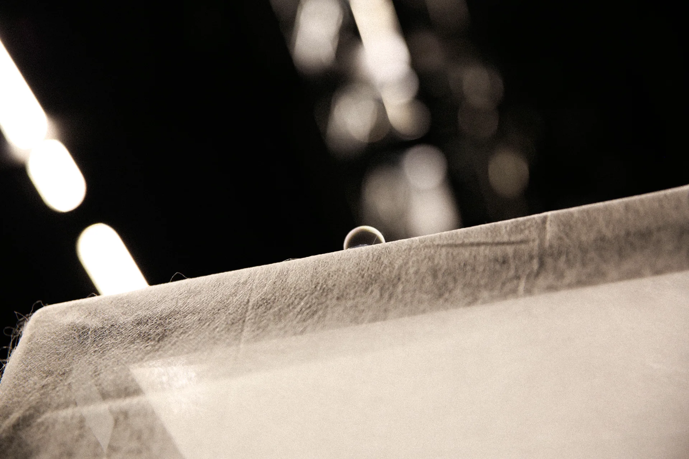
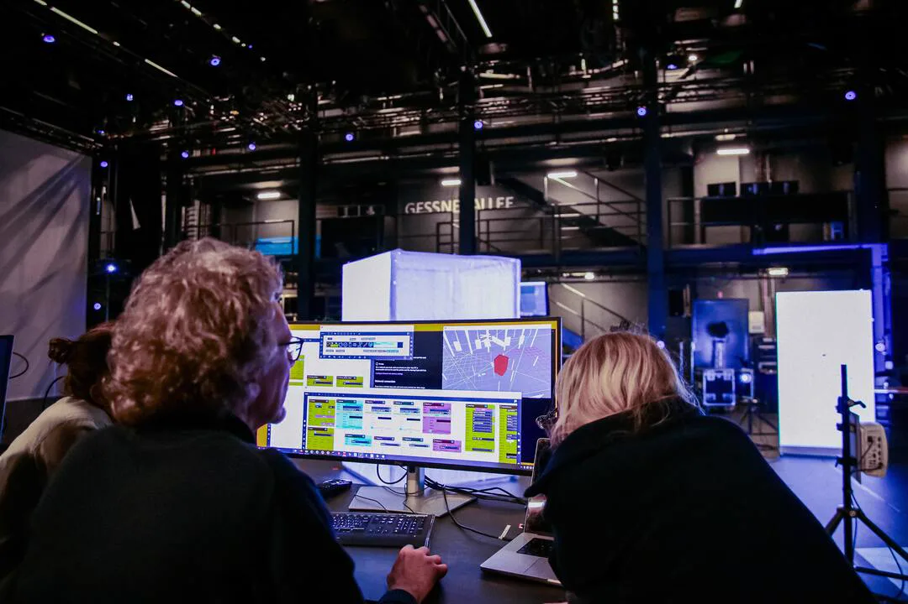
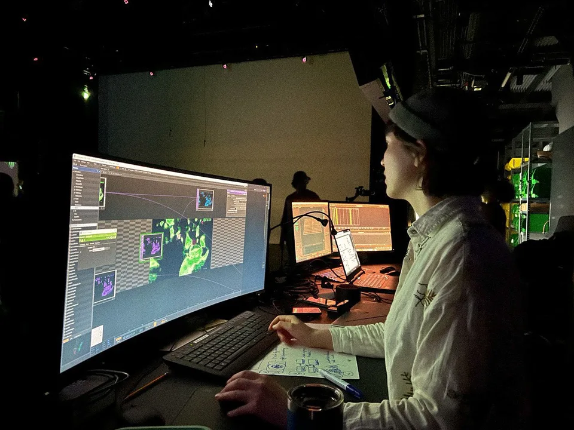
Dream of war
VR Game · Prague 2022
- 3D Environments
- Game Development
- 3D Animation
- Unreal Engine
Developed a VR experience in Unreal Engine, combining environment design, interaction logic, and real-time animation. Built spatial scenes and user pathways, focusing on navigation, pacing, and immersion. Presented at Anifilm (Liberec, 2023), FAMU (Prague, 2023), and UMPRUM ARTSEMESTR (Prague, 2022).
- Role
- Environment Artist, Developer
- Tools
- Unreal Engine, Blender
- Year
- 2022
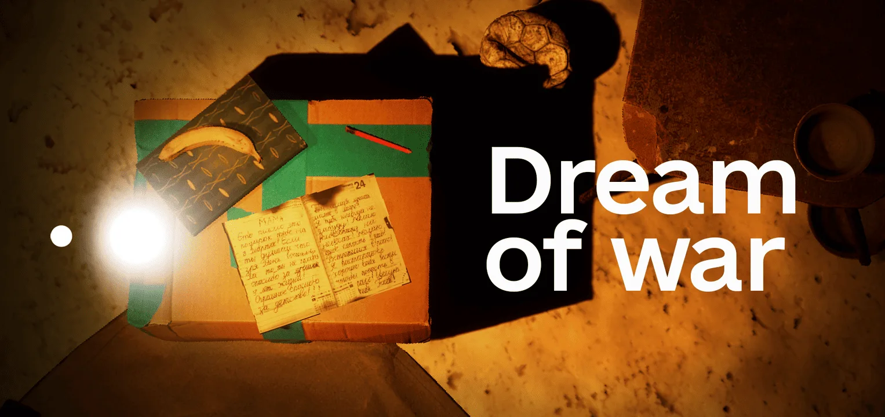
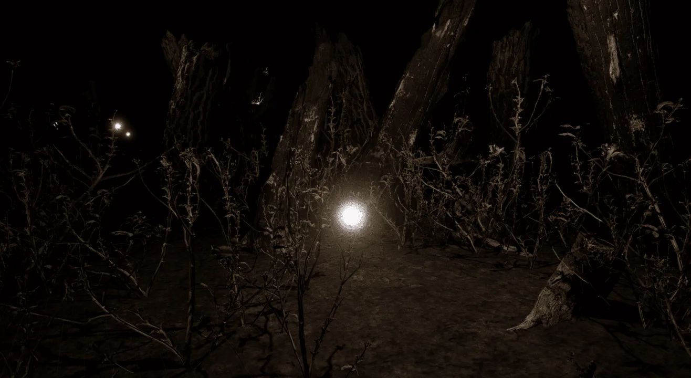
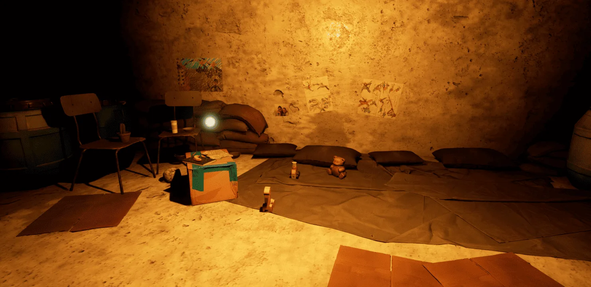
Forever Trashed
Game · Prague, 2023
- 3D Environments
- 3D Animation
- 3D Modeling
- Unity
Designed and built a game environment, including 3D assets, level structure, and character/object animations. Focused on spatial composition, gameplay flow, and visual coherence across the scene. Presented at FIK (Ústí nad Labem, 2023) and Lektvar (Olomouc, 2023).
- Role
- 3D Artist
- Tools
- Blender, Unity
- Year
- 2023
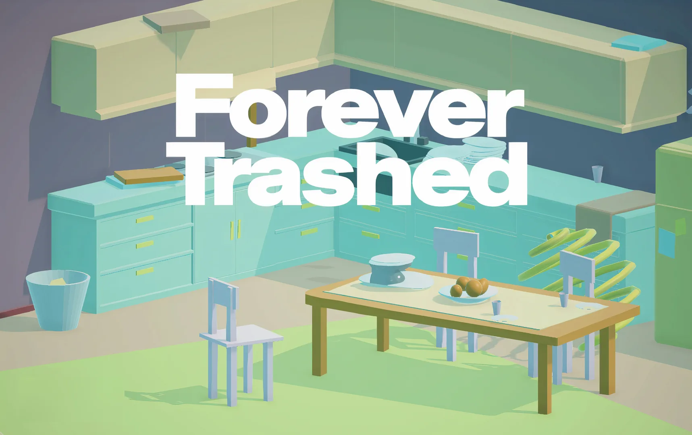
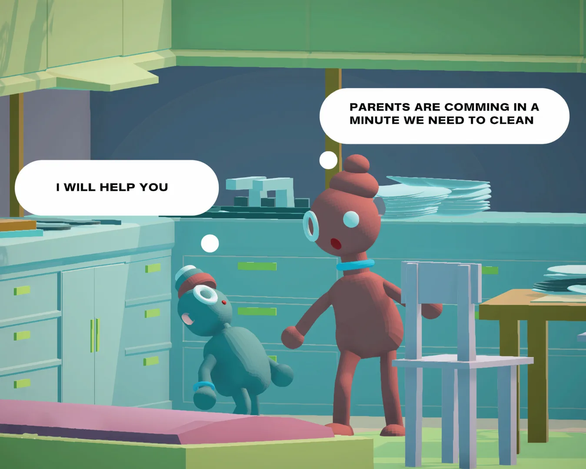
Cyber Passage
Installation · Zurich, 2025
- Real-time Environments
- Camera Tracking
- Projection Mapping
- Unreal Engine
Built and operated a real-time Unreal Engine setup combining virtual camera tracking and projection mapping. Aligned virtual perspective with the viewer’s position, adjusting scene and projection parameters to maintain spatial coherence as the viewpoint shifted. Presented at Immersive Art Space (Zurich, 2025).
- Role
- Visual Designer & Tracking Setup
- Tools
- Unreal Engine, Blender, Max/MSP, MadMapper
- Year
- 2025
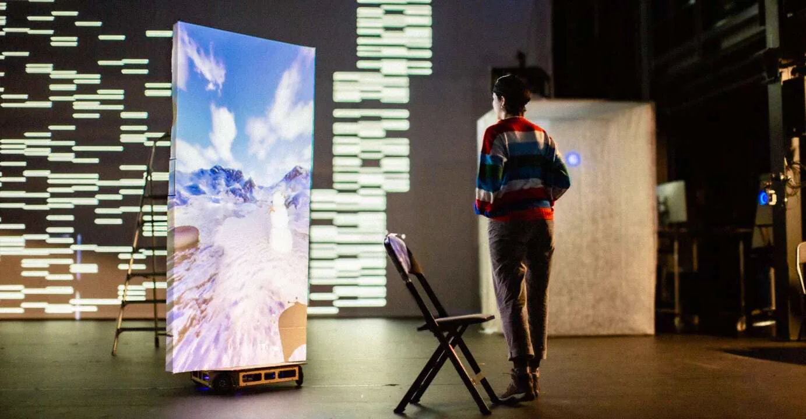
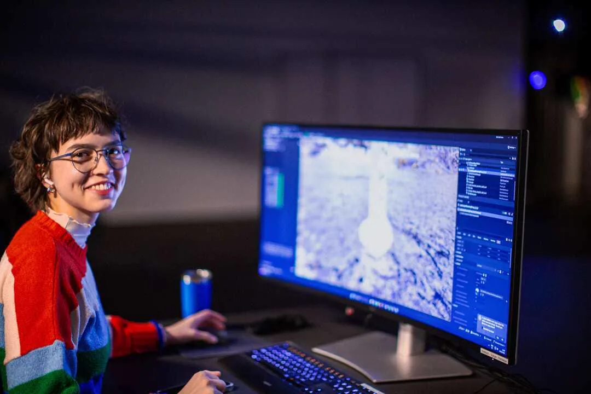
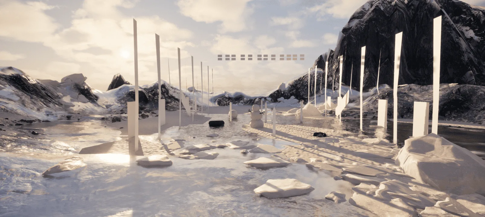
Chornozem
Startup Project · Zurich/Kyiv, 2025
- Research Visualization
- Visual Communication & Production
Visual communication for a research startup developing soil contamination detection tools. Shaped how the project is presented across pitches, exhibitions, and public platforms, producing video, graphics, and spatial materials that translate scientific data into clear narratives. The project received multiple international recognitions, including 1st Place at Falling Walls Lab Switzerland and Overall Winner at BioDesign Challenge 2025.
- Role
- Visual Communication & Production
- Tools
- Adobe Suite, Blender
- Year
- 2025
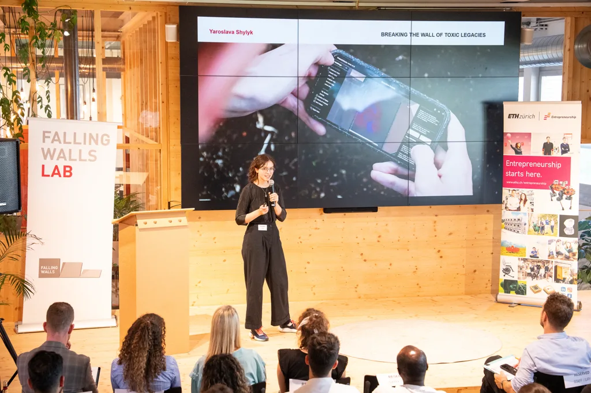
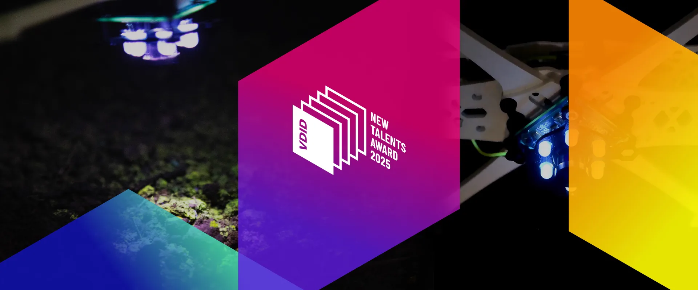
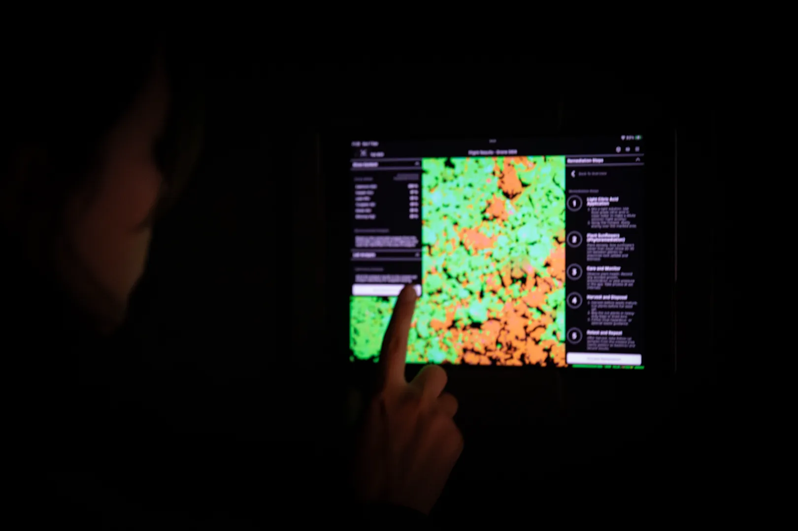
Kaleidoscope
Installation · Prague, 2024
- Animation Pipeline
- Motion Capture
- Unreal Engine
Captured motion data from a dance performance and processed it through a pipeline in MotionBuilder and Unreal Engine 5, refining timing and integrating the animation into a real-time 3D scene.
- Role
- Visual Designer
- Tools
- Unreal Engine, Motion Builder
- Year
- 2024
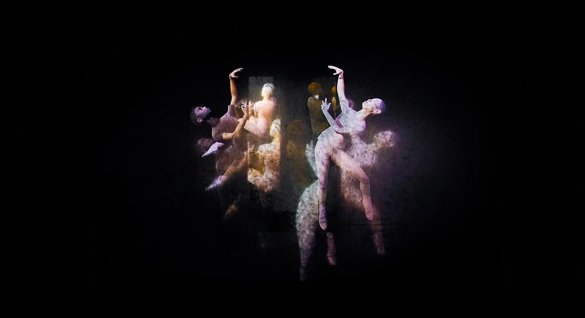
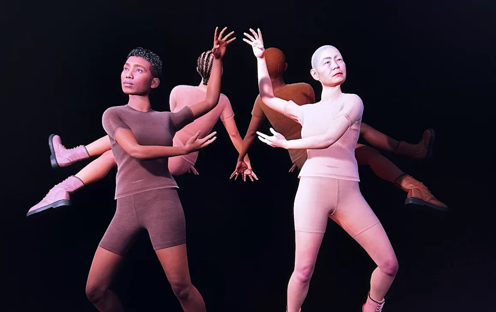
PLUG-IN
Installation · Berlin, 2024
- Audio-Reactive Visuals
- Signal Routing
- TouchDesigner
Developed an interactive installation combining spatial audio and generative visuals. Sensors placed in the space captured participant movement, driving changes in audio, which in turn influenced the visual system. Built and tuned the signal flow between input, sound, and graphics to maintain a coherent real-time response during interaction. Exhibited at BHROX, Berlin, in 2024.
- Role
- Visual Designer
- Tools
- TouchDesigner
- Year
- 2024